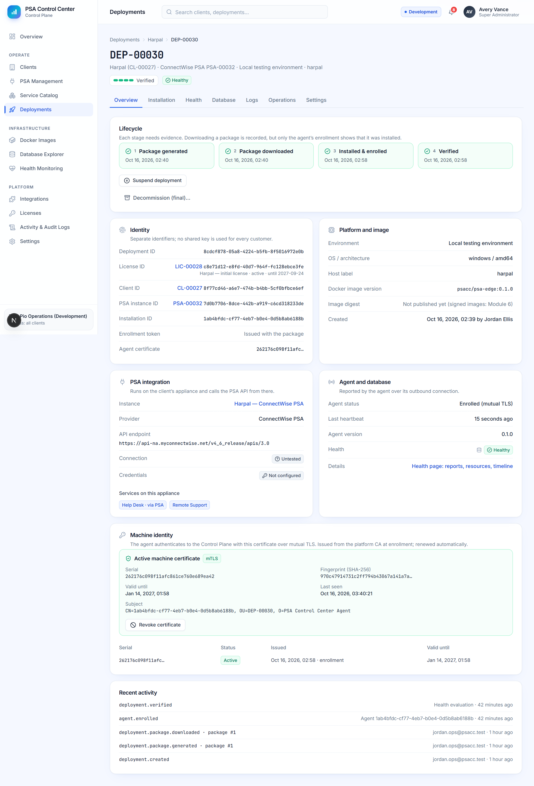
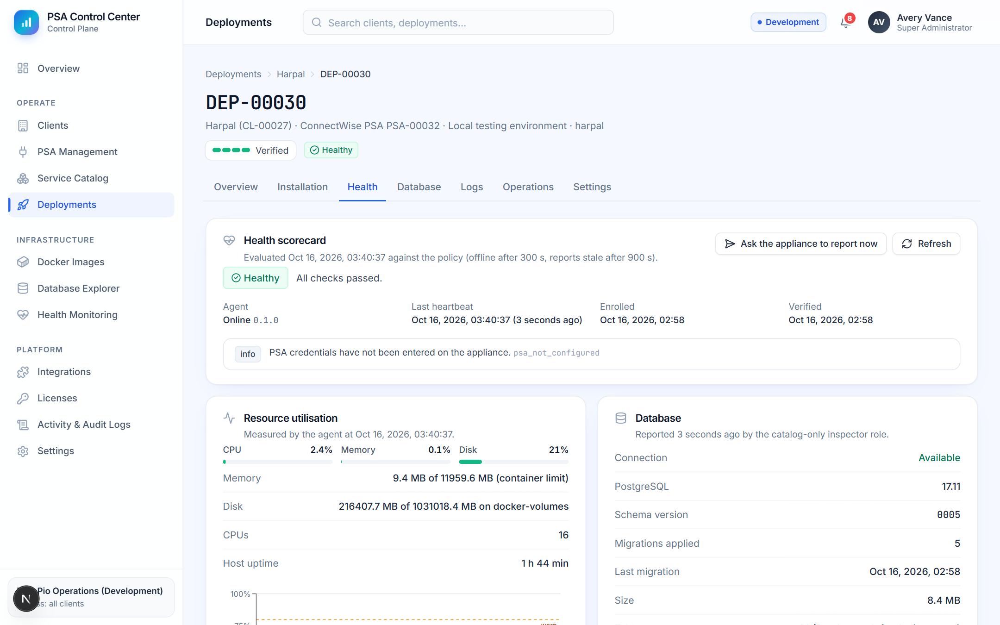
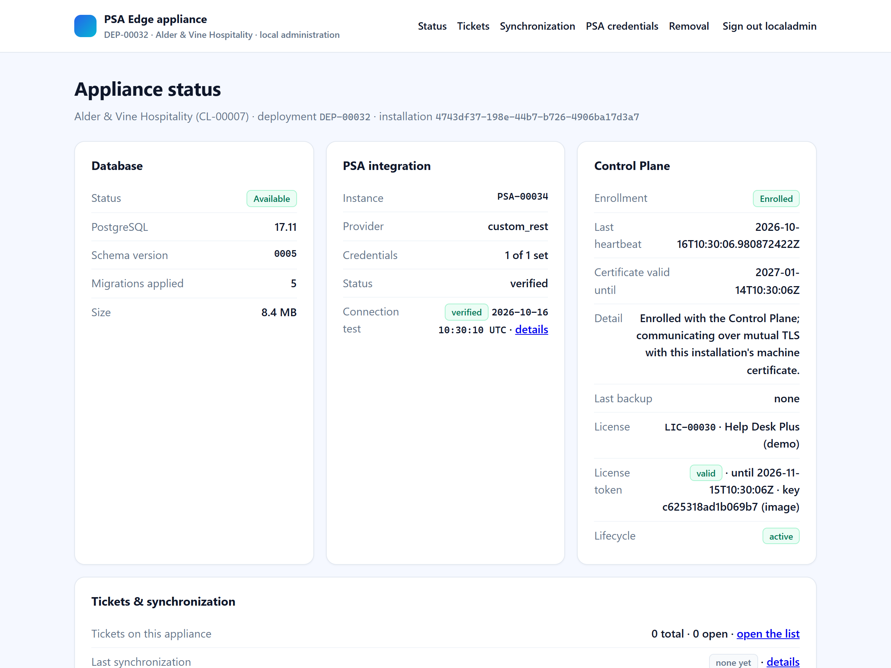
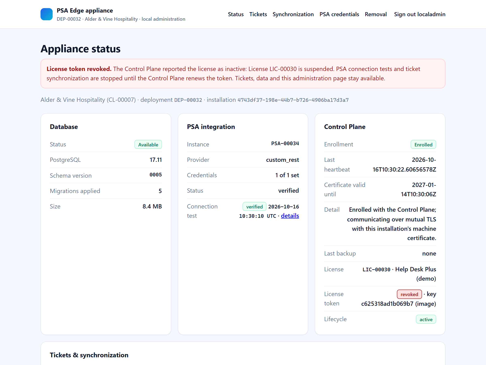
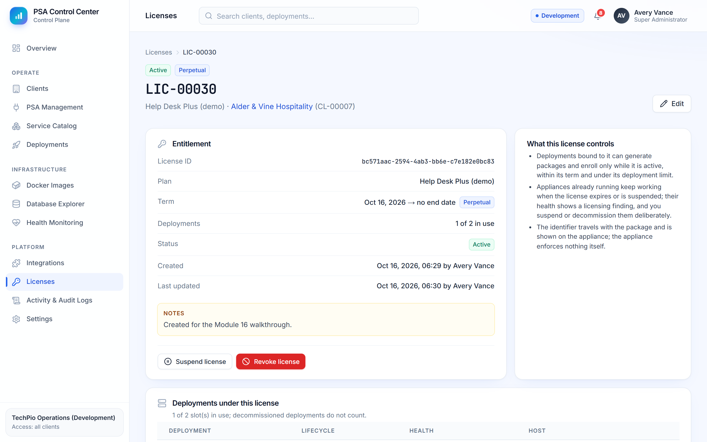
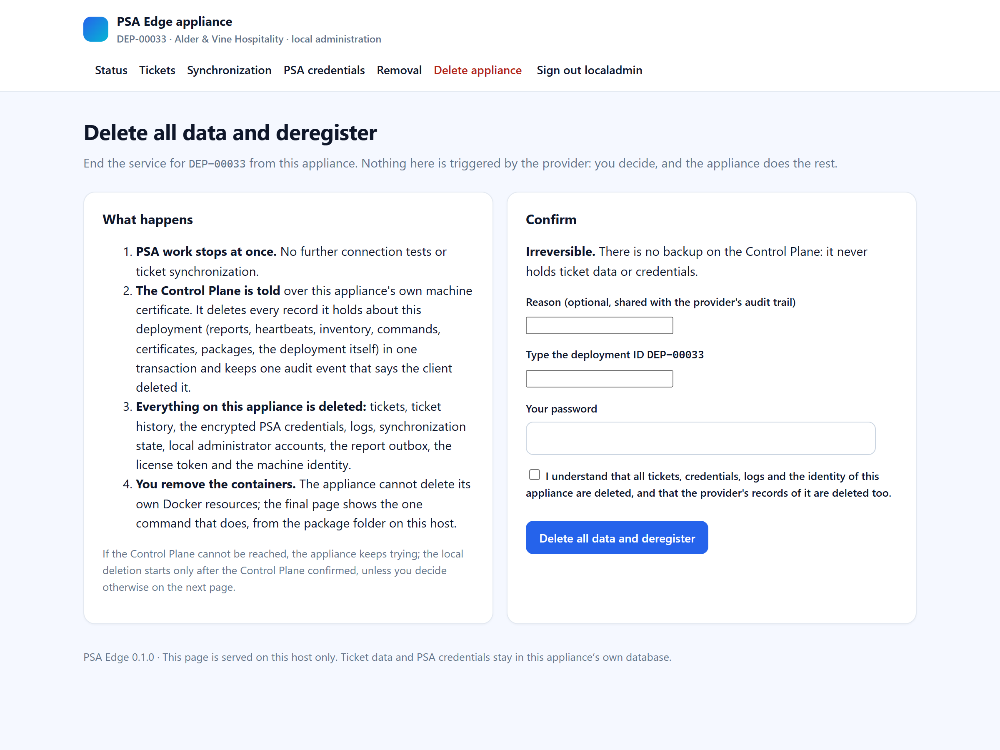
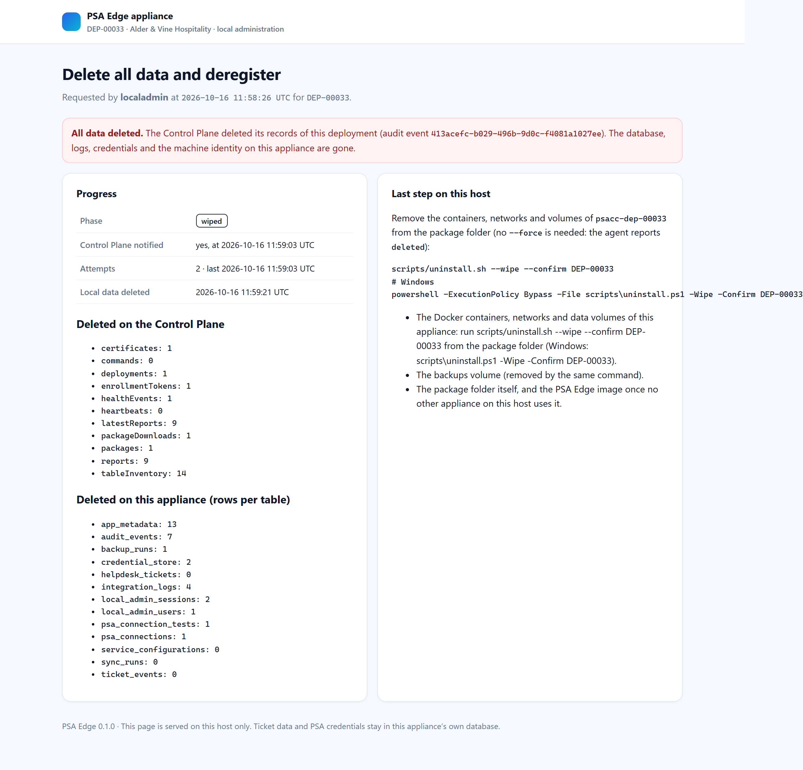
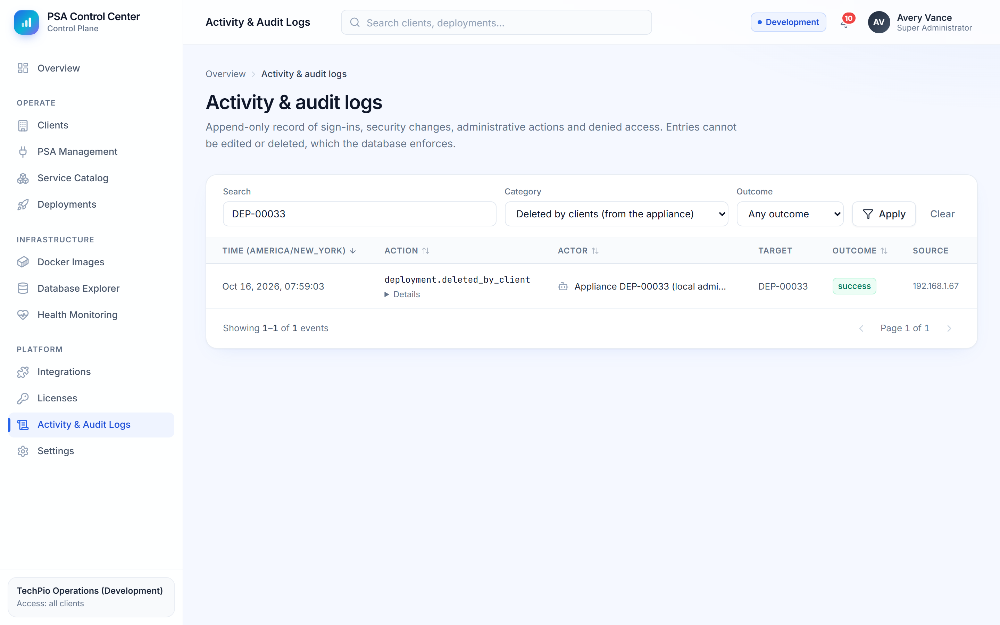
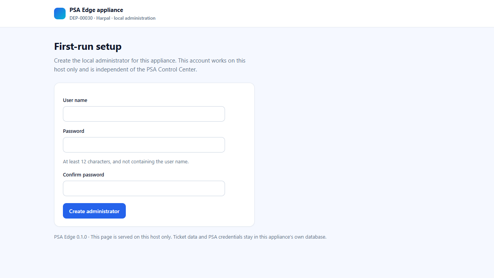

A management console for your IT service provider and an appliance that runs on your own server. The appliance holds every ticket and every PSA credential. The provider's console sees health, versions and counts, and never a ticket.
A small Docker stack on a machine at your site: its own PostgreSQL database, a local administration page reachable only from that machine, a worker that talks to your PSA, and an agent that reports health to the provider.
Onboards you, generates your installation package, watches health and versions, manages the licence, and can pause or retire the appliance. It never receives ticket data or credentials.
The appliance dials out over mutual TLS with its own machine certificate. Nothing connects into your network, and the provider has no path to your data.
If the provider's console is unreachable, tickets and synchronization continue. The licence token is valid for 30 days with a further 14 days of grace.



The appliance carries a signed licence token bound to your installation and verifies it against a key pinned into the appliance image. Suspending the licence on the provider's side stops PSA work within seconds; resuming restores it. Tickets, data and the administration page stay available throughout.


From your appliance's administration page you can end the service yourself: type the deployment ID and your password, and the appliance tells the provider to delete every record about it, then deletes its own database, credentials, logs and identity. The provider keeps one audit entry that says you deleted it, nothing else.



scripts/install.sh; Windows with WSL: psa-edge.cmd install). It verifies itself with 13 checks.
| Can | Cannot |
|---|---|
| See health, versions, counts and the licence state | Read tickets, notes, attachments or PSA credentials |
| Send signed remote commands: refresh, connection test, synchronization, restart, certificate rotation, image upgrade | Run arbitrary commands, read files or connect into your network |
| Suspend or resume the licence; retire the appliance's identity | Delete, wipe or uninstall the appliance remotely |
| Keep an append-only audit trail of its own actions | Edit or remove audit entries |
Every module ships with a completion report whose numbers come from executed tests: unit tests, API tests against PostgreSQL with row-level security, browser tests, and scenarios that install two real appliances on a Docker engine and exercise enrollment, synchronization, outages, suspension, licence enforcement and deletion end to end. The latest run: 573 of 573 passed.